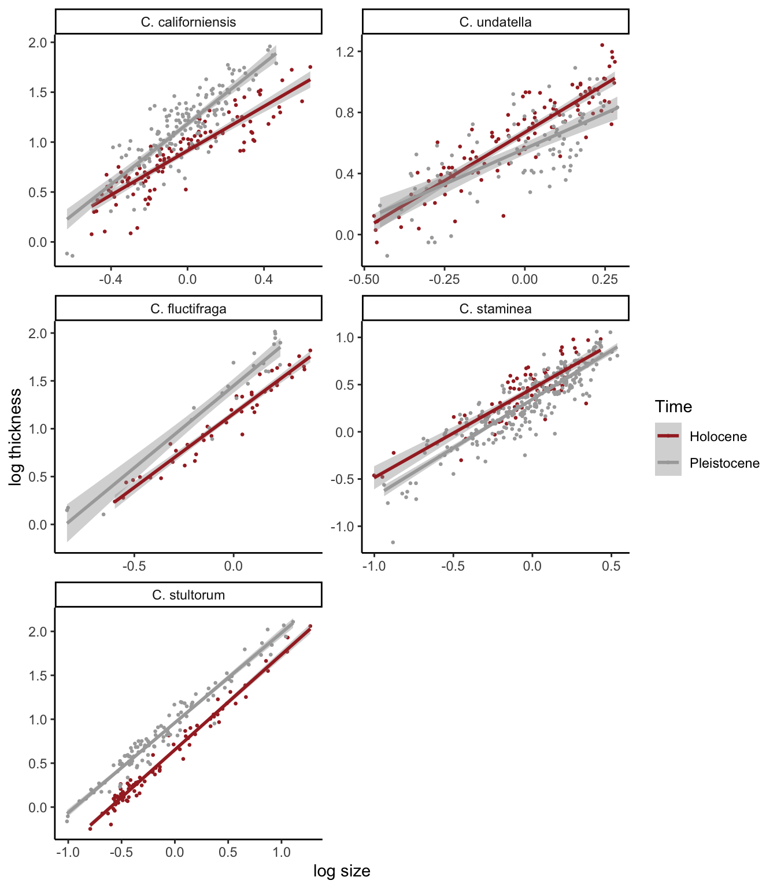
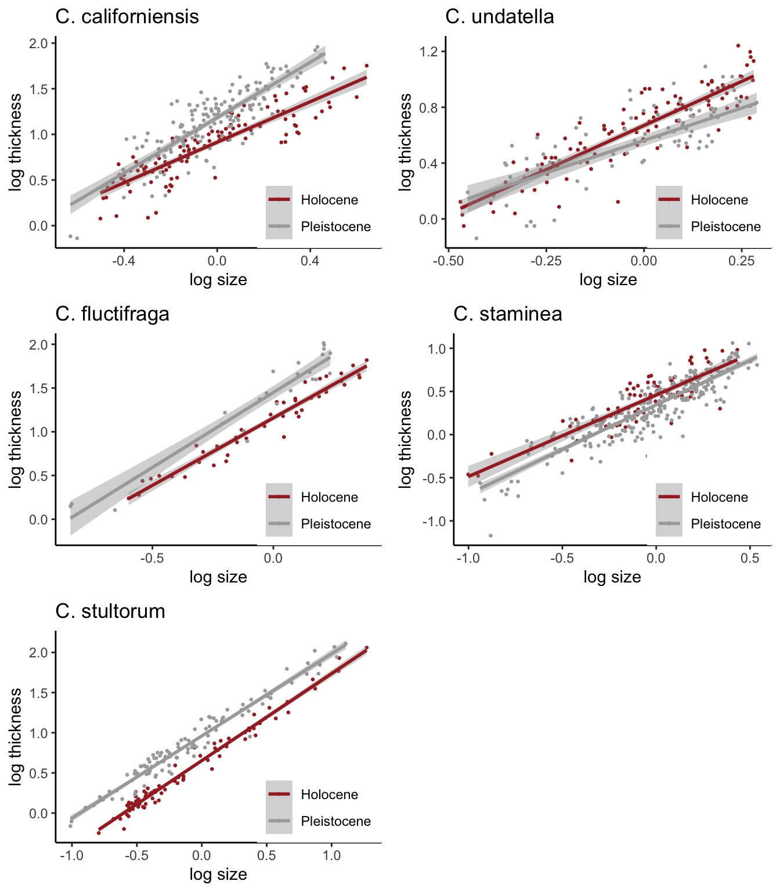

Assignment: Make this plot!
2025-09-15
Assignment: Recreate a figure form a published paper (or make it better)
Intro:
For this assignment, I want you to do the best you can to recreate a figure from a published paper.
I’ve chose a paper called Temporal trends in allometry of shell calcification in northeastern Pacific venerid bivalves: implications for predicting responses to climate change by Elizabeth Bullard and Kaustuv Roy, published in Biology Letters in August 2025.
https://royalsocietypublishing.org/doi/10.1098/rsbl.2025.0181
In this paper, the authors calculate allometric relationships between size and shell thickness for 5 species of bivalves across two different geologic time periods (Pleistocene and Holocene). They find that there are differences in these relationships across geologic time, and that the changes are species specific.
… which is interesting, but this exercise is not about the scientific finding itself. Instead, I want you to use their data and try reproducing their Figure 3, which looks like this:
knitr::include_graphics("images/Bullard_Roy_figure3.png")
Download the data:
The raw data for this paper is available for open access through the Dryad data repository: https://datadryad.org/dataset/doi:10.5061/dryad.qrfj6q5st
However, Figure 3 plots values that involve slightly complicated calculations for size (log of mean-centered values within each species/time). Since I want to focus here just on the graphics, I have created an appended dataset, which you can download here and then import.
Or alternatively, you can just import the data via the url like this:
dat=read.csv("https://dshizuka.github.io/RCourse/data/Bullard_Roy_Data_w_log.csv")Write a script that will reproduce the Figure 3.
Now, I want you to make a plot that looks as close to the original plot as you can!
You can use whatever tools you can think of at your disposal. You can use chatGPT. You can also collaborate with a classmate–but to the extent that you give each other hints like functions or share websites and tutorials (i.e., I just want to avoid a situation where one person does the whole assignment and then another person just copies it… because then the second person has done no learning).
But here is the catch: You HAVE TO tell me what resources you used.
To reiterate: you are allowed to use AI tools. That’s fine. I just want you to tell me exactly what you used. So if you used an AI tool, tell me what platform you used and what prompt you gave it.
Here are a couple of tries I did with this assignment!
My version 1:
Here was my first try. I used facet_wrap to do this. The challenging part was to customize the order of the plots to match the publication. To do that, I converted the “species” column into a factor and established “levels” according to the order in which I wanted the figures to be plotted. I created a separate “labeller” to correctly label the species names, which I learned how to do by googling.
But there were things I couldn’t correctly do with this method. First, I couldn’t put the figure legends in each panel–facet_wrap creates one legend for all panels. I also couldn’t figure out how to remove the boxes at the top of the panels (though I bet I could figure that out given enough time).
library(ggplot2)
species.names=c("C. californiensis", "C. fluctifraga" , "C. stultorum", "C. undatella", "C. staminea")
names(species.names)=c("californiensis", "fluctifraga" , "stultorum", "undatella", "staminea")
dat$species=factor(dat$species, levels=c("californiensis", "fluctifraga" , "stultorum", "undatella", "staminea"))
ggplot(dat, aes(x=size_meancentered, y=logthickness, color=Time)) +
geom_point(pch=19, size=0.5) +
geom_smooth(method="lm") +
scale_color_manual(values = c("brown", "darkgray"))+
scale_shape_manual(values = c(19, 17)) +
facet_wrap(~species, nrow=3, scales="free", dir="v", labeller=labeller(species=species.names)) +
theme_classic() +
ylab("log thickness") +
xlab("log size")
My version 2:
Here is my second try, where I make 5 different plots and then put
them together using the plot_grid() function from cowplot.
This makes it so that we can have the legend in each panel. This also
makes it easier to control the labels for each panel.
library(tidyverse)
library(cowplot)
dat= dat %>% mutate(species=factor(species, levels=c("californiensis", "fluctifraga" , "stultorum", "undatella", "staminea")))
p1=ggplot(dat %>% filter(species=="californiensis"), aes(x=size_meancentered, y=logthickness, color=Time)) +
geom_point(pch=19, size=0.5) +
geom_smooth(method="lm") +
scale_color_manual(values = c("brown", "darkgray"))+
scale_shape_manual(values = c(19, 17)) +
theme_classic() +
ylab("log thickness") +
xlab("log size") +
ggtitle("C. californiensis") +
guides(color=guide_legend(position="inside", title="")) +
theme(legend.justification.inside=c(1,0))
p2=ggplot(dat %>% filter(species=="fluctifraga"), aes(x=size_meancentered, y=logthickness, color=Time)) +
geom_point(pch=19, size=0.5) +
geom_smooth(method="lm") +
scale_color_manual(values = c("brown", "darkgray"))+
scale_shape_manual(values = c(19, 17)) +
theme_classic() +
ylab("log thickness") +
xlab("log size") +
ggtitle("C. fluctifraga") +
guides(color=guide_legend(position="inside", title="")) +
theme(legend.justification.inside=c(1,0))
p3=ggplot(dat %>% filter(species=="stultorum"), aes(x=size_meancentered, y=logthickness, color=Time)) +
geom_point(pch=19, size=0.5) +
geom_smooth(method="lm") +
scale_color_manual(values = c("brown", "darkgray"))+
scale_shape_manual(values = c(19, 17)) +
theme_classic() +
ylab("log thickness") +
xlab("log size") +
ggtitle("C. stultorum") +
guides(color=guide_legend(position="inside", title="")) +
theme(legend.justification.inside=c(1,0))
p4=ggplot(dat %>% filter(species=="undatella"), aes(x=size_meancentered, y=logthickness, color=Time)) +
geom_point(pch=19, size=0.5) +
geom_smooth(method="lm") +
scale_color_manual(values = c("brown", "darkgray"))+
scale_shape_manual(values = c(19, 17)) +
theme_classic() +
ylab("log thickness") +
xlab("log size") +
ggtitle("C. undatella") +
guides(color=guide_legend(position="inside", title="")) +
theme(legend.justification.inside=c(1,0))
p5=ggplot(dat %>% filter(species=="staminea"), aes(x=size_meancentered, y=logthickness, color=Time)) +
geom_point(pch=19, size=0.5) +
geom_smooth(method="lm") +
scale_color_manual(values = c("brown", "darkgray"))+
scale_shape_manual(values = c(19, 17)) +
theme_classic() +
ylab("log thickness") +
xlab("log size") +
ggtitle("C. staminea") +
guides(color=guide_legend(position="inside", title="")) +
theme(legend.justification.inside=c(1,0))
plot_grid(p1, p2, p3, p4, p5, byrow=F, ncol=2)